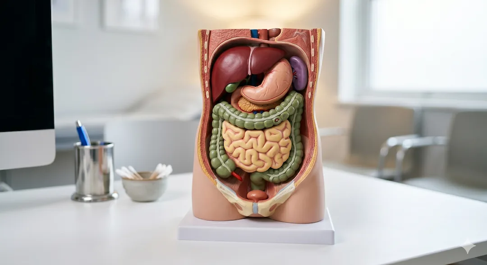

Tłuszcz trzewny (VAT) to nie tylko problem estetyczny, ale aktywna hormonalnie tkanka, która niszczy Twoje zdrowie od środka. W przeciwieństwie do miękkiego tłuszczu podskórnego, VAT otacza kluczowe organy – wątrobę, trzustkę i jelita – wydzielając cytokiny prozapalne, które podnoszą ciśnienie i zaburzają gospodarkę cukrową. Dobra wiadomość jest taka, że ten „sabotażysta” reaguje na zmianę stylu życia szybciej niż jakakolwiek inna tkanka tłuszczowa, o ile wdrożysz odpowiednią kolejność działań: od regeneracji snu po trening aerobowy.
Kluczowe wnioski
- Tłuszcz trzewny działa jak gruczoł hormonalny, produkując substancje zapalne niszczące naczynia krwionośne.
- Zjawisko TOFI (szczupły na zewnątrz, tłusty w środku) dotyczy wielu osób z prawidłowym BMI.
- Niedobór snu i przewlekły stres to bezpośrednie przyczyny odkładania się tłuszczu w jamie brzusznej.
- Obwód talii powyżej 94 cm u mężczyzn i 80 cm u kobiet to sygnał alarmowy dla układu krążenia.
Czym jest tłuszcz trzewny i czemu jest groźniejszy niż ten „zwykły"?
Tłuszcz trzewny (visceral adipose tissue – VAT) to tkanka tłuszczowa zlokalizowana głęboko w jamie brzusznej, która fizycznie otacza Twoje organy wewnętrzne, takie jak wątroba, jelita i trzustka. W przeciwieństwie do tłuszczu podskórnego, który pełni głłównie funkcję izolacyjną, tłuszcz trzewny jest metabolicznie aktywny – działa jak „złośliwy” gruczoł hormonalny, wydzielając cytokiny prozapalne bezpośrednio do żyły wrotnej, co obciąża wątrobę i niszczy naczynia krwionośne.
Dlaczego jest tak niebezpieczny? Bo nie zachowuje się jak magazyn. Tłuszcz trzewny wydziela wolne kwasy tłuszczowe, a także angiotensynę – substancję zwężającą naczynia krwionośne i podnoszącą ciśnienie. Jednocześnie obniża poziom adiponektyny, hormonu o działaniu ochronnym, który poprawia wrażliwość na insulinę. Badania z UK Biobank potwierdziły, że wysoki poziom tłuszczu trzewnego jest niezależnym czynnikiem ryzyka chorób sercowo-naczyniowych – niezależznie od BMI. Możesz więc mieć prawidłową wagę, a nawet szczupłą sylwetkę, i jednocześnie mieć krytycznie wysoki poziom VAT. To zjawisko znane jest jako „TOFI" – Thin Outside, Fat Inside. Więcej o diagnostyce zdrowia przeczytasz w naszym dziale Zdrowie.
Wniosek praktyczny: Nie oceniaj swojego zdrowia tylko po wadze. Regularnie mierz obwód talii, bo to on mówi prawdę o Twoim tłuszczu trzewnym.
- VAT stanowi zwykle 10% całkowitej tkanki tłuszczowej, ale generuje 90% problemów metabolicznych.
- Wydziela cytokiny prozapalne (IL-6, TNF-alfa) niszczące układ krążenia.
- Bezpośrednio obciąża wątrobę, prowadząc do jej stłuszczenia.
- TOFI: zjawisko posiadania wysokiego VAT przy niskim BMI.

Jakie choroby wywołuje tłuszcz trzewny? Lista zagrożeń po 50-tce
Nadmiar tłuszczu trzewnego jest bezpośrednio powiązany z rozwojem cukrzycy typu 2, chorób serca, niealkoholowego stłuszczenia wątroby (NAFLD) oraz niektórych rodzajów nowotworów. Metaanaliza z 2025 roku obejmująca ponad 800 tysięcy uczestników wykazała, że wysoki wskaźnik tłuszczu trzewnego zwiększa ryzyko zawału o 55% i udaru o 45%. VAT zakłóca sygnalizację insuliny w wątrobie, co prowadzi do chronicznie podwyższonego poziomu cukru i uszkodzenia tętnic szyjnych.
Cukrzyca i insulinooporność to kolejne bezpośrednie konsekwencje. Tłuszcz trzewny uwalnia wolne kwasy tłuszczowe, które zakłócają działanie receptorów insulinowych. Prowadzi to do stopniowego wzrostu glukozy na czczo, a potem do pełnej cukrzycy. Demencja też ma związek: badania Kaiser Permanente wykazały, że osoby z wysokim poziomem tłuszczu brzusznego w wieku 40 lat były niemal trzy razy bardziej narażone na demencję w późniejszym życiu. Badania profilaktyczne są kluczem do wczesnego wykrycia tych zmian.
Wniosek praktyczny: Traktuj walkę z tłuszczem brzusznym nie jako dietę odchudzającą, ale jako profilaktykę przeciwudarową i przeciwcukrzycową.
- Ryzyko zgonu sercowego wyższe o 38% przy wysokim VAT (ScienceDirect 2025).
- Bezpośrednia przyczyna niealkoholowego stłuszczenia wątroby (NAFLD).
- Trzykrotnie wyższe ryzyko demencji w starszym wieku.
- Przyspieszone tworzenie blaszek miażdżycowych w tętnicach szyjnych.
Kortyzol i sen: Dlaczego stres „tuczy” Twój brzuch od środka?
Przewlekle podwyższony poziom kortyzolu, hormonu stresu, jest jednym z głównych mechanizmów odpowiedzialnych za magazynowanie tłuszczu w jamie brzusznej, nawet przy niskokalorycznej diecie. Komórki tłuszczowe w okolicach trzewi mają więcej receptorów kortyzolowych niż inne tkanki, przez co stres dosłownie „przesuwa” energię z posiłków do Twojego brzucha. Niedobór snu (poniżej 7 godzin) potęguje ten efekt, zaburzając regulację hormonów głodu i sytości.
Analiza danych wykazała, że każda dodatkowa godzina snu była związana z mierzalnym spadkiem masy tłuszczu trzewnego – nawet po uwzględnieniu diety i aktywności fizycznej. Osoby śpiące regularnie 6 godzin lub mniej mają istotnie wyższy poziom VAT niż osoby śpiące 7–8 godzin. Nadmierny trening bez regeneracji sam w sobie podnosi kortyzol i może paradoksalnie zwiększać obwód talii. Zarządzanie stresem jest tak samo ważne jak trening.
Wniosek praktyczny: Jeśli nie śpisz minimum 7 godzin dziennie, Twoja walka z brzuchem na siłowni będzie walką z wiatrakami. Zacznij od naprawy snu.
- Kortyzol „pcha” tłuszcz prosto do jamy brzusznej.
- Brak snu = wyższa insulina i wyższy kortyzol rano.
- 8 godzin snu to naturalny spalacz tłuszczu trzewnego.
- Przetrenowanie bez dni odpoczynku nasila otyłość brzuszną.
Co naprawdę działa? Ćwiczenia, dieta i kolejność priorytetów
Najskuteczniejszą metodą redukcji tłuszczu trzewnego jest połączenie regularnego treningu aerobowego (3 razy w tygodniu po 45 minut) z dietą o niskiej zawartości cukrów prostych i żywności przetworzonej. Metaanalizy potwierdzają, że wysiłek o umiarkowanej intensywności (marsz, rower, pływanie) spala VAT efektywniej niż sam trening siłowy, choć to kombinacja obu metod daje najlepsze efekty metaboliczne. Zmiany w diecie, takie jak model śródziemnomorski, dają mierzalne efekty już po 8 tygodniach.
Nie chodzi o głodzenie się – drastyczny deficyt kaloryczny podnosi kortyzol i może paradoksalnie utrudniać redukcję VAT. Stabilizacja cukru we krwi, więcej białka, mniej przetworzonej żywności i cukrów prostych to fundament. Obwód talii mierzony centymetrem krawieckim rano, na czczo – to najprostszy domowy wskaźnik postępów. Wybierz odpowiednią aktywność dopasowaną do Twoich możliwości stawowych. Sprawdź też test siły chwytu jako prosty marker sprawności po 50.
Wniosek praktyczny: Postaw na regularne spacery i eliminację słodzonych napojów. To dwa najprostsze kroki, które najszybciej „rozpuszczają” VAT.
- Trening aerobowy (strefa 2) to król redukcji tłuszczu trzewnego.
- Dieta śródziemnomorska redukuje VAT bez liczenia kalorii.
- Białko (1,6g/kg) chroni mięśnie podczas spalania tłuszczu.
- Eliminacja żywności ultra-przetworzonej wycisza stany zapalne.
Kobiety po 50-tce i menopauza: Dlaczego talia nagle rośnie?
Spadek poziomu estrogenów po menopauzie powoduje naturalne przesunięcie magazynowania tkanki tłuszczowej z okolic bioder i ud w stronę jamy brzusznej, co zwiększa ryzyko sercowo-naczyniowe u kobiet do poziomu obserwowanego u mężczyzn. Estrogeny działają ochronnie, dbając o metaboliczne bezpieczeństwo organów; gdy ich zabraknie, organizm zaczyna gromadzić niebezpieczny VAT nawet jeśli masa ciała pozostaje bez zmian. W tym okresie kluczowe staje się zarządzanie stresem i snem.
Kobiety po menopauzie mają też wyższe stężenia markerów zapalnych związanych z VAT. Kortyzol działa szczególnie silnie u kobiet w okresie perimenopauzy: spadek estrogenów obniża klirens kortyzolu, przez co jego poziom pozostaje wyższy. To jeden z powodów, dla których zarządzanie stresem i snem jest jeszcze ważniejsze dla kobiet po 50-tce. Dowiedz się więcej o hormonalnej równowadze po menopauzie.
Wniosek praktyczny: Jeśli zauważasz, że Twoje ubrania są ciaśniejsze w talii, mimo że waga stoi w miejscu – to sygnał, że Twoje hormony zmieniają strategię. Zwiększ ilość spacerów i zadbaj o wyciszenie przed snem.
- Menopauza usuwa hormonalną tarczę chroniącą przed VAT.
- Wzrost obwodu talii po 50-tce to sygnał metaboliczny, nie tylko estetyczny.
- Spadek estrogenu zwiększa wrażliwość na stres (kortyzol).
- Trening siłowy pomaga utrzymać tempo metabolizmu po 50-tce.

Alkohol a „brzuch piwny”: Dlaczego procenty sprzyjają VAT?
Płynne kalorie pochodzące z alkoholu są przetwarzane przez wątrobę w pierwszej kolejności, co drastycznie hamuje utlenianie tłuszczów (spalanie) i sprzyja ich bezpośredniemu odkładaniu się w formie tłuszczu trzewnego. Alkohol podnosi poziom kortyzolu i zaburza fazę snu głębokiego, co tworzy idealne środowisko hormonalne do rozrostu otyłości brzusznej. Nawet niewielkie, regularne ilości alkoholu mogą niweczyć wysiłek włożony w dietę i ćwiczenia.
Ponadto alkohol dostarcza „pustych" kalorii i bezpośrednio obciąża wątrobę, która jest już atakowana przez wolne kwasy tłuszczowe z VAT. Ograniczenie alkoholu to często pomijany, ale krytyczny punkt: regeneracja wątroby jest niezbędna, aby mogła ona efektywnie zarządzać gospodarką tłuszczową całego organizmu. Zdrowe nawyki żywieniowe to nie tylko to, co jesz, ale i to, co pijesz.
Wniosek praktyczny: Zrezygnuj z alkoholu na co najmniej 30 dni, aby „odblokować” metabolizm wątroby i zobaczyć, jak szybko Twój obwód talii zacznie spadać.
- Alkohol blokuje spalanie tłuszczu na kilka godzin po spożyciu.
- Wątroba zajęta alkoholem nie radzi sobie z usuwaniem tłuszczu trzewnego.
- Piwo i słodkie drinki to „płynny cukier” trafiający prosto do brzucha.
- Picie wieczorem rujnuje nocny wyrzut hormonu wzrostu.
Najczęściej zadawane pytania
Czy można mieć za dużo tłuszczu trzewnego przy normalnej wadze?
Tak – i to jest jeden z najważniejszych wniosków współczesnej kardiologii. Zjawisko TOFI (Thin Outside, Fat Inside) jest dobrze udokumentowane. Osoby z prawidłowym BMI mogą mieć metabolicznie niebezpieczny poziom VAT, szczególnie jeśli prowadzą siedzący tryb życia, śpią mało i są pod chronicznym stresem. Sama waga ani BMI nie wystarczą jako wskaźniki zdrowia.
Jak zmierzyć tłuszcz trzewny w domu?
Najprościej i najtaniej – centymetrem krawieckim. Mierz obwód talii rano, na czczo, na poziomie pępka, po normalnym wydechu. Wartości alarmowe to powyżej 102 cm u mężczyzn i powyżej 88 cm u kobiet (wg ESC). Wagi smart są mało precyzyjne w tym zakresie; centymetr i badania krwi dają pełniejszy obraz.
Ile czasu zajmuje redukcja tłuszczu trzewnego?
Badania kliniczne wskazują, że 12–16 tygodni regularnych ćwiczeń (3 sesje tygodniowo) to czas, po którym pojawiają się mierzalne zmiany w badaniach obrazowych. Interwencje dietetyczne mogą pokazać efekty już po 8 tygodniach. Kluczowe jest myślenie w kategoriach miesięcy, a nie tygodni.
Czy post przerywany (IF) pomaga na brzuch?
Dla wielu osób tak – poprawia wrażliwość na insulinę i zmniejsza stan zapalny. Jednak u osób pod chronicznym stresem agresywny post może podnosić kortyzol i paradoksalnie nasilać magazynowanie tłuszczu brzusznego. Decyzja o IF powinna uwzględniać Twój aktualny poziom stresu i jakość snu.
Źródła
- Nature: Visceral adiposity and atherosclerosis risk, 2025
- ScienceDirect: VAI and CVD meta-analysis (824k participants), 2025
- Harvard Health: Taking aim at belly fat, 2024
- Cleveland Clinic: Visceral Fat health risks and reduction, 2024
- ScienceInsights: How to Lose Visceral Fat - what actually works, 2026
- ESC Prevention Guidelines: Waist circumference and metabolic risk, 2024
Uwaga: Artykuł ma charakter informacyjny i edukacyjny. Nie zastępuje konsultacji lekarskiej, diagnozy ani leczenia.